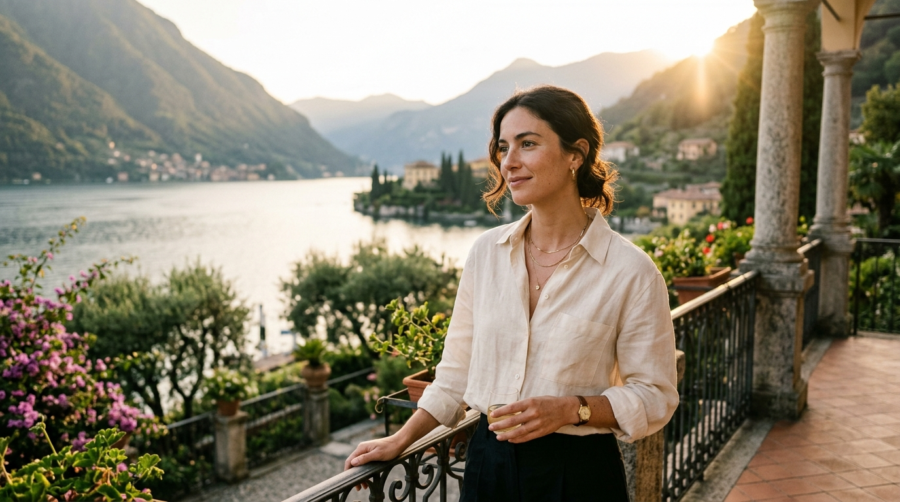

Quiet Luxury • 85mm f/1.401. Old Money / Quiet Luxury (Lake Como)
The #1 viral quiet luxury aesthetic on Instagram. Italian villa terrace overlooking Lake Como, warm golden sunlight rim lighting, soft sun flare, crisp linen shirt, creamy bokeh, and sharp catchlights in eyes.
[IMAGE_URL] cinematic portrait of an elegant person during golden hour on an Italian villa terrace overlooking Lake Como, quiet luxury aesthetic, old money style, warm golden sunlight rim lighting, sun flare, linen shirt, dreamy soft bokeh, shot on 85mm f/1.4 lens, Kodak Portra 400 film grain, Vogue editorial, natural skin texture with sharp catchlights in eyes --ar 4:5 --style raw --s 250